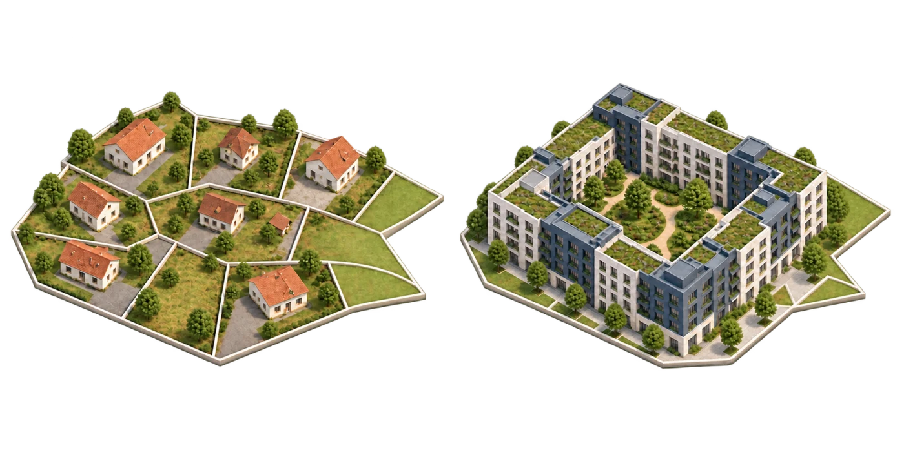
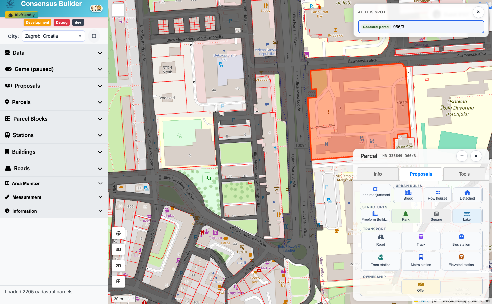
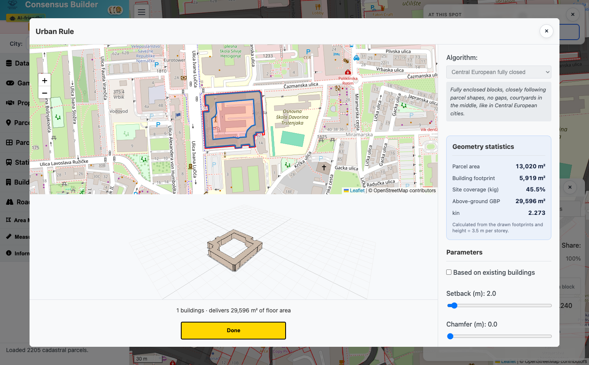
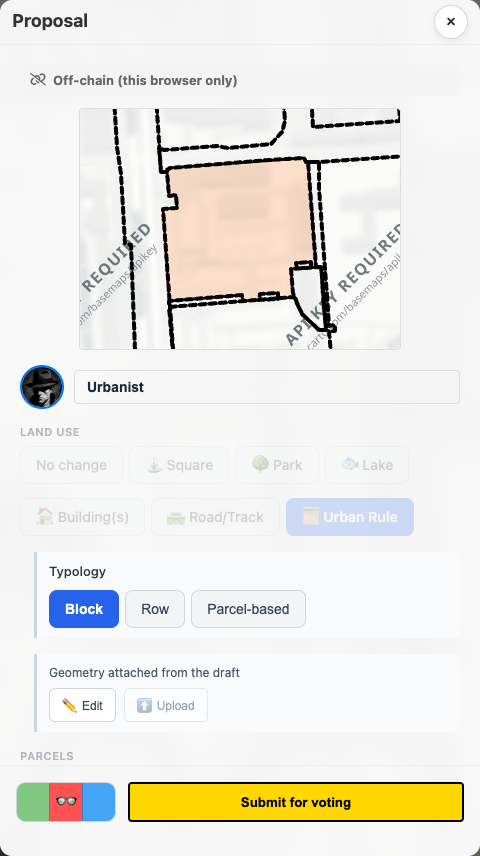

Prijedlog
Dovršavanje zgrade, ceste ili javnog prostora stvara lokalni prijedlog i primjenjuje ga na kartu. Njegov spremljeni zapis ne mijenja se izravno.
Consensus Builder radi kao gradograditeljska igra. Odaberi stvarne čestice i postavi moguću promjenu na kartu — primjerice blok, park, cestu ili vlasničku ponudu. Dovršeni dizajn postaje primijenjeni lokalni prijedlog koji možeš pregledati, granati, usporediti i podijeliti.
Otvori kartu
Klikni česticu. Za zahvat na više čestica uključi Odaberi više parcela pa klikaj redom. Otvara se ploča čestice — prijeđi na karticu Prijedlozi.

Snimka zaslona uskoroOdaberi alat u paleti Izgradi. Zgrade i reparcelacija otvaraju dizajner; Park, Trg i Jezero rade jednim klikom. Ceste i pruge pokreću se svojim alatima za crtanje. Kad završiš, stvara se lokalni prijedlog koji je već primijenjen na kartu — nema zasebnog koraka „primijeni”.
Dovršeni prijedlog ne mijenja se izravno: otvori ga da pregledaš rezultat, promijeniš prikaz, podijeliš ga ili odabereš Makni s karte bez brisanja. U uređivaču ispod oblikuješ geometriju prije potvrde ili nakon otvaranja nove varijante.

Snimka zaslona uskoroOdaberi Razgranaj prijedlog kako bi dobio uređivu kopiju. Promijeni geometriju, naziv, opis, ponudu, vlasništvo, uvjete, rok isteka ili polog, pa stvori zamjenski prijedlog. Izvor ostaje netaknut, zato se varijante mogu usporediti.

Snimka zaslona uskoroPrebaci se između 2D-a i 3D-a, a u gradovima koji ih podržavaju koristi realistični prikaz i šetnju. Jedan prijedlog dijeli se iz njegovih detalja; za kompoziciju primijeni željeni skup i odaberi Podijeli cijeli plan.
Paleta se nalazi u kartici Prijedlozi ploče čestice i pokazuje sve što možeš izgraditi na trenutačnom odabiru.
| Alat | Što radi |
|---|---|
| Blok | Popunjava blok zgradama po urbanističkom pravilu (gradivi obuhvat, katnost, odmaci). Vodič za zgrade → |
| Niz kuća | Niz prislonjenih kuća preko odabranih čestica. Traži najmanje dvije čestice. |
| Slobodnostojeće | Po jedna samostojeća kuća na svakoj odabranoj čestici. |
| Slobodna forma | Zgrada koju sam crtaš, bez pravila — kad ti tipologije ne odgovaraju. |
| Reparcelacija | Spaja odabrane čestice i iznova ih dijeli na uredniji raspored. Vodič → |
| Park | Park preko odabranih čestica, jednim klikom. Namještaj (drveće, klupe, staze) dodaješ poslije. Vodič → |
| Trg | Javni trg, jednim klikom. Dobiva kip; fontane, stolove i klupe dodaješ poslije. |
| Jezero | Vodena površina preko odabranih čestica. Čestice moraju biti povezane. |
| Ponuda | Jedini alat koji ništa ne gradi: kupnja ili prijenos vlasništva bez promjene na karti. |
Ta tri pojma važno je razlikovati dok istražuješ alternative.
Dovršavanje zgrade, ceste ili javnog prostora stvara lokalni prijedlog i primjenjuje ga na kartu. Njegov spremljeni zapis ne mijenja se izravno.
Uređiva kopija za promjenu dizajna ili uvjeta. Spremanje stvara novi zamjenski prijedlog, a izvorni ostaje netaknut.
Uređeni skup prijedloga primijenjenih na kartu. Dijeljenje plana čuva tu kompoziciju i njezine ovisnosti.
Isti prijedlog možeš gledati na četiri načina. Gumbi su na karti, gore desno.
Za odabir čestica, crtanje i provjeru granica. Ovdje se radi.
Zgrade, ceste i javni prostori kao 3D objekti — i panel koji računa koliko ti prijedlog donosi.
Prijedlog stoji u Googleovom fotorealističnom modelu grada.
Pogled iz očiju pješaka. Dostupno samo u gradovima koji to podržavaju.
Otvori prijedlog i klikni Podijeli. Dobiješ poveznicu koja otvara točno taj zahvat.
Primijeni sve prijedloge koje želiš poslati, pa u bočnoj traci klikni Podijeli cijeli plan. Poveznica čuva njihov redoslijed i ovisnosti.
Želiš isprobati alternativu? Izradi novu varijantu prijedloga ili stvori zamjenski. Objavljeni izvornik ostaje netaknut dok novu verziju možeš mijenjati.
Blok, niz kuća, slobodnostojeće i slobodna forma — i kako urbanističko pravilo oblikuje rezultat.
Iscrtavanje trase, poprečni presjek s trakama i nogostupima, te novi blokovi koje cesta stvara.
Javni prostor u jednom kliku, pa uređivač namještaja: drveće, klupe, staze, fontane.
Preraspodjela neurednog bloka na uredne čestice, uz zadržavanje vlasničkih udjela.
2D, 3D, realističan kontekst i šetnja — te kako čitati dobit prijedloga.